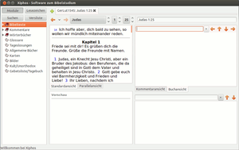
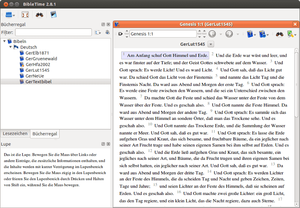

Xiphos
Dieser Artikel wurde für die folgenden Ubuntu-Versionen getestet:
Ubuntu 16.04 Xenial Xerus
Ubuntu 14.04 Trusty Tahr
Zum Verständnis dieses Artikels sind folgende Seiten hilfreich:
Xiphos  , vormals bekannt als GnomeSword bzw. Sword, ist ein Werkzeug zum Bibelstudium auf der Basis von GTK. Es handelt sich um ein plattformübergreifendes quelloffenes Projekt und basiert auf Modulen des Sword-Projekts. Hinter diesen Projekten steht die Bibel-Gesellschaft CrossWire . Mehr dazu findet sich in der Wikipedia unter The CrossWire Bible Society.
, vormals bekannt als GnomeSword bzw. Sword, ist ein Werkzeug zum Bibelstudium auf der Basis von GTK. Es handelt sich um ein plattformübergreifendes quelloffenes Projekt und basiert auf Modulen des Sword-Projekts. Hinter diesen Projekten steht die Bibel-Gesellschaft CrossWire . Mehr dazu findet sich in der Wikipedia unter The CrossWire Bible Society.
Für verschiedene Desktop-Umgebungen gibt es grafische Oberflächen, die das einfache und komfortable Studium von verschiedenen Bibel-Übersetzungen, Lexika und Kommentaren ermöglichen. Für auf GTK-basierende Umgebungen wie GNOME, Xfce und LXDE ist dies Xiphos, während Bibletime auf Qt setzt.
Xiphos¶
|  |
| Xiphos mit Lutherbibel |
Xiphos kann aus den Paketquellen über das folgende Paket installiert [1] werden:
xiphos (universe)
 mit apturl
mit apturl
Paketliste zum Kopieren:
sudo apt-get install xiphos
sudo aptitude install xiphos
Einrichtung¶
Nach der Installation kann das Programm als xiphos gestartet werden [2]. Beim ersten Programmstart erhält man den Hinweis, dass sich das Programm als Anwendung für die Protokolle bzw. URIs sword:// und bible:// gesetzt hat. Mit dem gconf-editor kann das unter dem Schlüsselwort "/desktop/gnome/url-handlers" wieder geändert werden.
Im Anschluss müssen Module installiert werden, damit ein Bibeltext eingelesen werden kann (s. unten). Einfach geht das mit dem Software-Center, wo man unter "Weitere Informationen" gleich passende Module auswählen kann. Beispielsweise:
Scofield Reference Notes
Luther-Bibel von 1545
Weitere Module sind unter Module im RAW-Zip-Format zu finden. Diese Archivdateien enthalten zwei Ordner: mods.d und modules. Der Inhalt sollte entsprechend der Ordnerkonvention nach /usr/share/sword/ extrahiert werden. Dies geschieht mit folgenden Befehlen im Terminal [2]:
cd /usr/share/sword/ sudo unzip ~/modul.zip
Wie Module erzeugt werden, steht hier .
Hinweis:
Wenn man eine .zip-Datei im Homeverzeichnis entpackt und die entsprechenden Dateien nur nach /usr/share/sword/ kopiert und die entpackten Dateien im Homeverzeichnis belässt, dann wird nur das im Homeverzeichnis befindliche Modul geladen, obwohl unter /etc/sword.conf als Pfad /usr/share/sword/ steht.
Wer gerne den Bibeltext der "Hoffnung für Alle" installieren möchte, kann das zwar mit der beschriebenen Methode durchführen, muss aber danach die Bibeltexte freischalten. Erkennen kann man dies zum einen an dem "Schloss"-Symbol und zum anderen, wenn man mit der rechten Maustaste auf das Buch klickt. Hier noch der Link zum Freischalten: Hoffnung für Alle - Sword-Modul  .
.
Bibletime¶
|  |
| Bibletime |
Bibletime kann ebenfalls aus der Paketverwaltung heraus installiert [1] und mit dem Befehl Bibletime gestartet werden [2].
bibletime (universe)
mit apturl
Paketliste zum Kopieren:
sudo apt-get install bibletime
sudo aptitude install bibletime
Links¶
Bible Desktop
ist durch die Verwendung von Java plattformübergreifend einsetzbarThe Word
lässt sich mit Wine einfach installieren und bietet eine andere Menüführung
- Erstellt mit Inyoka
-
 2004 – 2017 ubuntuusers.de • Einige Rechte vorbehalten
2004 – 2017 ubuntuusers.de • Einige Rechte vorbehalten
Lizenz • Kontakt • Datenschutz • Impressum • Serverstatus -
Serverhousing gespendet von